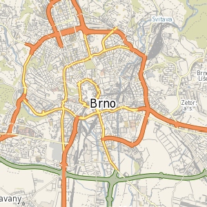
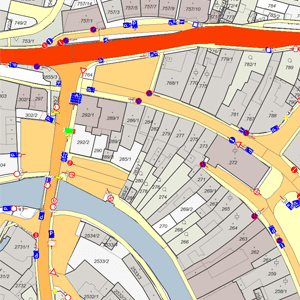
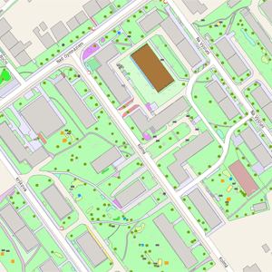

Mapové aplikace

Základní mapa
Mapa města Uherské Hradiště

Katastrální mapa
Mapa s detailními údaji katastru nemovitostí a užitečnými z katastru odvozenými vrstvami

Mapa komunikací
Mapa komunikací ve vlastnictví města
Mapa pasportu mobiliáře
Aplikace pro evidenci mobiliáře

Mapa pasportu osvětlení

Mapa pasportu zeleně
Mapa obsahuje informace o městské zeleni
Zlepši své město
Analýza bezpečnosti
Ostatní

24
dub
Aktualizace dat katastru nemovitostí
Byla provedena aktualizace databáze KN na stav k 1.4.2018. Další aktualizace je plánována v červenci 2018.
22
led
Byla provedena aktualizace databáze KN na stav 1.1.2018
Další aktualizace databáze KN je plánována na duben roku 2018.
25
črc
Modul pro import DGN
V rámci migrace GIS byl zpřístupněn modul pro import DGN Souborů. Každý správce pasportu si může nahrát do GISu DGN soubor jako podklad a poté nad ním zakreslovat či měnit co je třeba. Pro zatím je modul zpřístupněn jen pro roli Referent SMM. Přístup ZDE.Podmínkou importu je verze 7 DGN souboru a nutnost mít dgn soubor zabalen v *.zip souboru
25
črc
Pasport veřejného osvětlení
Město Uherské Hradiště využívá pro evidenci veřejného osvětlení SW společnosti Datmolux. Nyní je nově je zprovozněna služba, která z uvedeného softwaru vizualizuje sloupy veřejného osvětlení s čísly na mapovém podkladu.